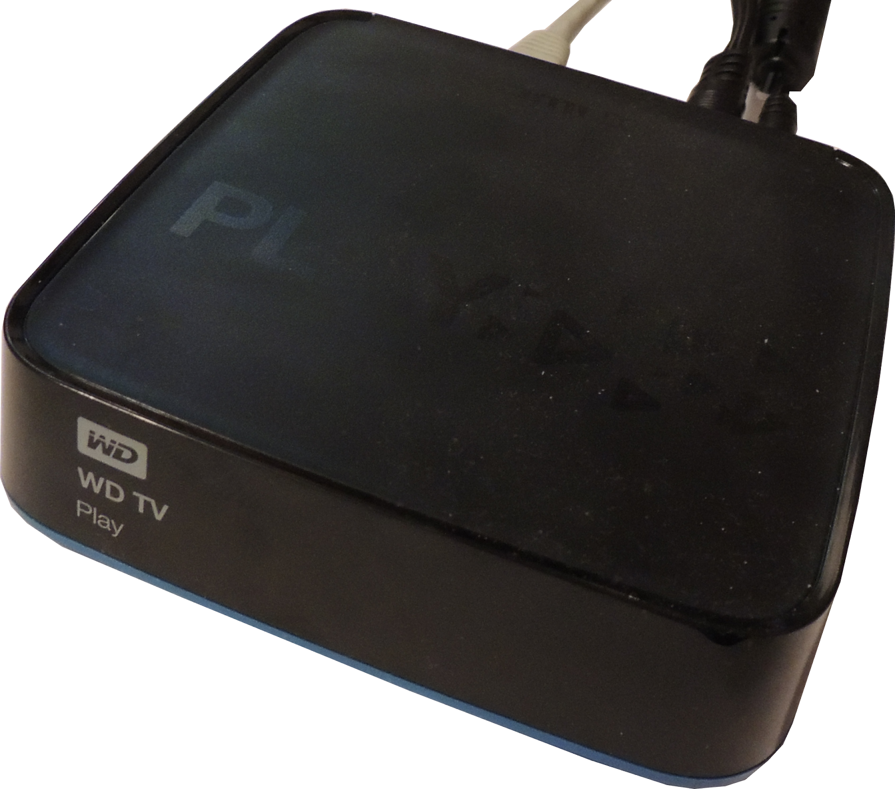
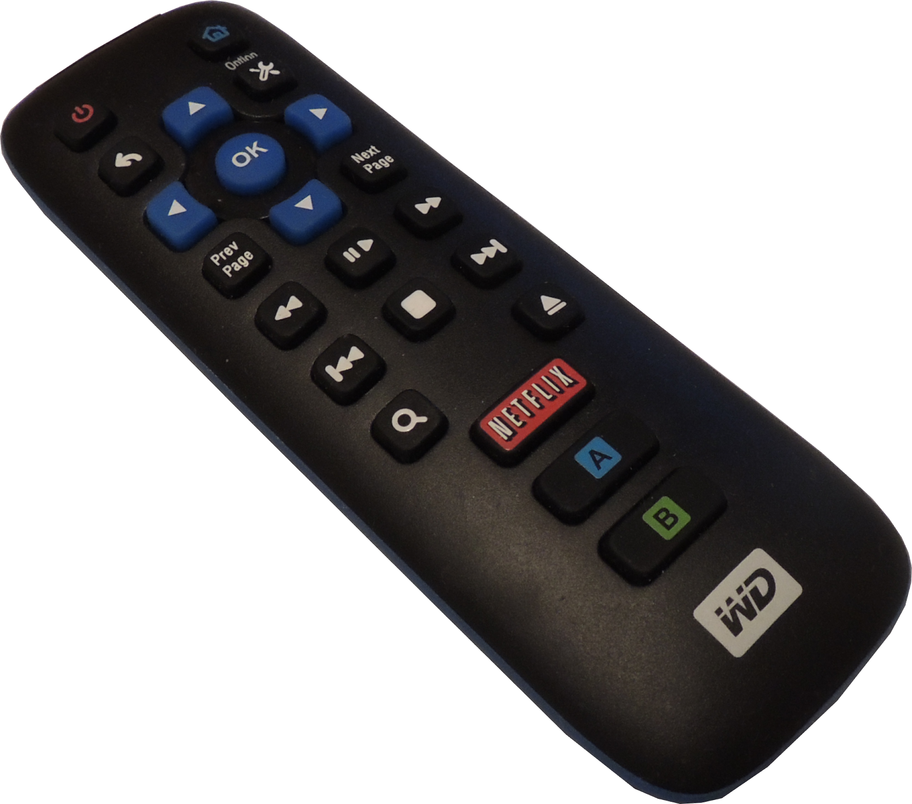
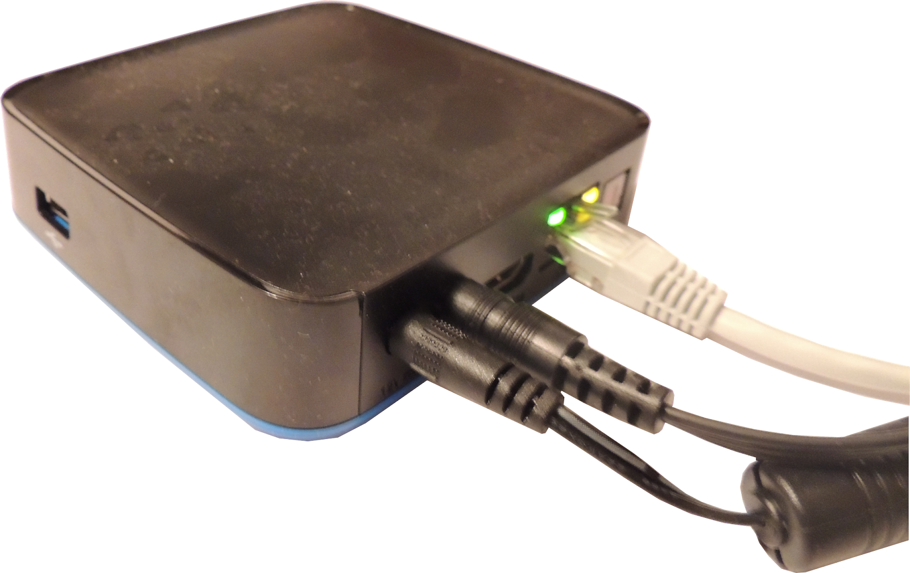
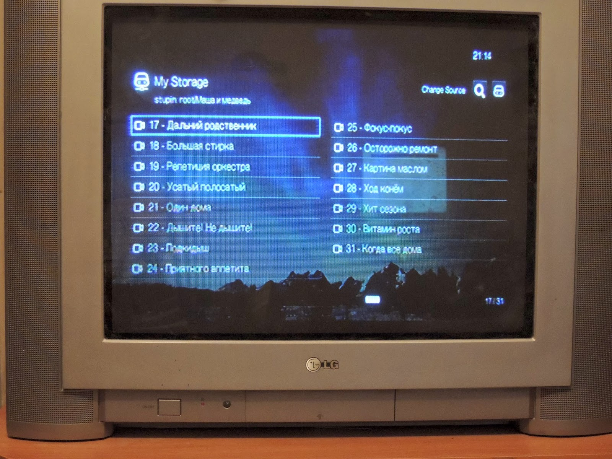

Не столь давно я решил отказаться от видеокарты с разъёмом S-Video, к которому у меня дома был подключен телевизор. Новых видеокарт с таким разъёмом сейчас не найти, везде только VGA, DVI и HDMI. Конвертеры из HDMI и DVI в композитный, компонентный сигнал или в S-Video стоят неоправданно больших денег, причём найти их в продаже - задача непростая. Покупать вместе с новой видеокартой ещё и новый телевизор с разъёмом HDMI мне не хотелось.
Разного рода TV-тюнеры и платы видеозахвата позволяют лишь оцифровывать аналоговое видео, копируя его на компьютер. Плата видеомонтажа теоретически могла бы мне помочь, но это редкое и узкоспециализированное решение. Сомневаюсь, чтобы при помощи такой платы можно было бы просто смотреть видео.
Единственным оставшимся решением, которое позволило бы смотреть фильмы с компьютера на старом телевизоре, были цифровые мультимедийные проигрыватели. Это небольшие устройства с жёстким диском или без него, умеющее воспроизводить видео, музыку с SATA-дисков, флеш-накопителей, карт памяти или из сети Ethernet или WiFi.
После сравнения доступных предложений мой выбор пал на устройство WD TV Play. Это устройство не имеет жёсткого диска или места под его установку, более того - у него даже нет интерфейса SATA, но зато у него есть всё нужное мне: композитный видеовыход, выход для аналогового стерео и сеть Ethernet. Кроме того, имеется поддержка WiFi и разъёмы, которые могут пригодиться в дальнейшем: USB, HDMI, оптический SPDIF.
Подробную инструкцию по настройке самого устройства можно найти на его странице. Для лентяев приведу прямую ссылку на руководство: Руководство пользователя.
 Итак, в целом автоконфигурирование сети на домашних устройствах работает примерно следующим образом.
Если устройству не назначен сетевой адрес вручную, то оно сначала пытается получить настройки у DHCP-сервера. Если DHCP-сервер не отвечает, устройство выбирает случайный адрес из диапазона 169.254.1.0-169.254.255.255 и проверяет, что он свободен, выполняя ARP-запрос. Если адрес занят, устройство выбирает другой случайный IP-адрес и повторяет процедуру до тех пор, пока не обнаружит свободный IP-адрес. С выбранным адресом используется маска подсети 255.255.0.0.
После того, как сеть настроена, устройство отправляет мультикаст-запрос на адрес 239.255.255.250, на UDP-порт 1900, пытаясь обнаружить по протоколу SSDP устройства в локальной сети. Каждое устройство, предоставляющее сервис, должно ответить на запрос, сообщив в ответе HTTP-ссылку на страницу управления устройством.
Протокол SSDP позволяет обнаруживать маршрутизаторы, поддерживающие протокол IGD и мультимедийные устройства, поддерживающие протокол DLNA. Таким образом устройство может получить доступ к сети интернет, включая возможность принимать соединения из внешней сети, а также воспроизводить мультимедийные файлы, имеющиеся на устройствах домашней сети.
Я не буду использовать автоконфигурирование и ручную настройку сети, а воспользуюсь более привычным для системного администратора способом раздачи настроек - при помощи DHCP-сервера ISC DHCP Server. Если у вас дома есть маршрутизатор, раздающий настройки по DHCP, или использующий самоназначенные адреса, то логично воспользоваться вместо DHCP-сервера DHCP-клиентом с поддержкой самоназначения адресов (APIPA), например из пакета dhcpcd5.
Поскольку мой мультимедийный проигрыватель работает с сетью интернет лишь как клиент, не пытаясь открыть на прослушивание порты на внешнем адресе, то мне будет достаточно настроить фаерволл вручную. Вы же можете воспользоваться протоколом IGD и настроить сервер из пакета linux-igd. Или, если вы пользуетесь домашним маршрутизатором, можно воспользоваться поддержкой IGD, имеющейся на маршрутизаторе.
Наконец, я буду использовать лишь один DLNA-сервер, поэтому он самостоятельно будет отвечать на запросы по протоколу SSDP. Если планируется настроить несколько DLNA-серверов или интегрировать их с IGD-сервером, то скорее всего вам потребуется отдельный сервер протокола SSDP, например из пакета minissdp. Теоретически, остальные приложения можно настроить так, что они будут работать через minissdp как через посредника. На практике я этого не проверял.
Моя домашняя компьютерная сеть подключена к отдельной сетевой карте компьютера. Я использую сеть 169.254.254.0/24, которая входит в диапазон IP-адресов link-local 169.254.1.0-169.254.254.255, который описан в RFC 3927. Этот диапазон используется для автоматической настройки сети на устройствах, которые не смогли найти DHCP-сервер. Устройство выбирает случайный адрес из этого диапазона и делает ARP-запрос к нему. Если на ARP-запрос никто не отвечает, устройство присваивает этот адрес себе. Если адрес занят, то процедура поиска свободного адреса повторяется.
Этот диапазон я выбрал по одной простой причине - он не используется моим провайдером, так что моя локальная домашняя сеть не пересекается с локальной сетью провайдера и устройства в моей сети могут обращаться через NAT к локальной сети провайдера.
Настройки интерфейс eth1 описываются в файле /etc/network/interfaces и имеют следующий вид:
auto eht1 iface eth1 inet static address 169.254.254.1 netmask 255.255.255.0
Всё просто. Чтобы настройки вступили в силу, можно воспользоваться следующими командами:
# ifdown eth1 # ifup eth1
Устройство я включил в домашнюю локальную сеть, которая подключена к отдельной сетевой карте компьютера. Если у вас есть домашний маршрутизатор, можете воткнуть устройство в него - в таком случае можно воспользоваться DHCP-сервером, встроенным в сам маршрутизатор. Можно также настроить статические IP-адреса или попытать счастья с автоматической настройкой сетевого интерфейса без участия DHCP-сервера, например, при помощи демона avahi-autoipd.
Чтобы устройство могло получить настройки сети от компьютера автоматически, я настроила на своём компьютере DHCP-сервер. Мой выбор автоматически остановился на привычном мне ISC DHCP Server, что кому-то может показаться забиванием гвоздей микроскопом. Вы можете настроить другой DHCP-сервер.
Итак, установим пакет с DHCP-сервером:
# apt-get install isc-dhcp-server
Создадим файл конфигурации /etc/dhcp/dhcpd.conf со следующим содержимым:
# Не нужно пытаться обновлять данные на DNS-сервере
ddns-update-style none;
# Этот DHCP-сервер в сети - главный
authoritative;
# "Средство" syslog, которое DHCP-сервер будет использовать для отправки
# диагностических сообщений в syslog
log-facility local7;
subnet 169.254.254.0 netmask 255.255.255.0 {
# Диапазон адресов, выдаваемый в аренду
range 169.254.254.2 169.254.254.254;
# Суффикс, используемый для решения запросов с неполным доменным именем
option domain-name "stupin.su";
# Локальный кэширующий DNS-сервер (настройка не описана)
option domain-name-servers 169.254.254.1;
# Клиент должен продлевать аренду по прошествии суток
default-lease-time 86400;
# Аренда считается истекшей по истечение двух суток
max-lease-time 172800;
# Локальный NTP-сервер (настройка не описана)
option ntp-servers 169.254.254.1;
# Маршрут по умолчанию
option routers 169.254.254.1;
# Широковещательный адрес сети
option broadcast-address 169.254.254.255;
}
host wd {
hardware ethernet 00:90:a9:62:b2:99;
fixed-address 169.254.254.2;
}
В файл /etc/default/isc-dhcp-server впишем имя интерфейса, на котором DHCP-сервер должен принимать запросы:
INTERFACES="eth1"
Осталось перезапустить DHCP-сервер, чтобы его новые настройки вступили в силу:
# /etc/init.d/isc-dhcp-server restart
На самом деле устройство способно работать только с первым DNS-сервером, а NTP-серверы он попросту игнорирует, предпочитая всегда пользоваться серверами pool.ntp.org.
Мой плеер имеет MAC-адрес 00:90:a9:62:b2:99 - его я узнал при помощи tcpdump. Этому MAC-адресу всегда будет выдаваться один и тот же IP-адрес 169.254.254.2.
До сих пор у меня ещё не было повода расписывать, как я обычно настраиваю фаерволл, поскольку обычно мне приходится настраивать прохождение пакетов для классических интернет-протоколов, вроде HTTP, FTP, SMTP, POP3, IMAPv4, DNS, NTP. Там всё довольно просто - достаточно открыть TCP или UDP-порт в нужном направлении, а в случае FTP ещё загрузить несколько модулей ядра и прописать их в автозагрузку.
В этом случае речь идёт о протоколе под названием SSDP, который не назовёшь классическим. Поэтому я решил описать настроенные правила в этой заметке. Однако, для начала я опишу минимальную настройку фаерволла для рабочей станции, на которой не запущен ни один сетевой сервис. Обычно я ограничиваюсь всего тремя правилами и политикой по умолчанию для входящих пакетов DROP:
# iptables -A INPUT -s 127.0.0.1/32 -i lo -j ACCEPT # iptables -A INPUT -m conntrack --ctstate RELATED,ESTABLISHED -j ACCEPT # iptables -A INPUT -p icmp -m icmp ! --icmp-type 5 -j ACCEPT # iptables -P INPUT DROP
При такой конфигурации наш компьютер может инициировать обмен с кем угодно, получать от него ответы, но сам будет отвечать только на ICMP-запросы.
Для того, чтобы эти настройки восстанавливались при каждой загрузке, я сохраняю их при помощи команды iptables-save:
# iptables-save > /etc/network/iptables
И прописываю загрузку правил при настройке интерфейса lo в файле /etc/network/interfaces:
auto lo iface lo inet loopback pre-up iptables-restore < /etc/network/iptables
Теперь перейдём к настройке доступа со стороны мультимедиа-центра к серверу MiniDLNA на нашем сервере:
# iptables -A INPUT -i eth1 -s 169.254.254.2 -d 169.254.254.1 -p tcp -m tcp --dport 8200 -j ACCEPT # iptables -A INPUT -i eth1 -s 169.254.254.2 -d 169.254.254.1 -p udp -m udp --dport 1900 -j ACCEPT # iptables -A INPUT -i eth1 -s 169.254.254.2 -d 239.255.255.250 -p udp -m udp --dport 1900 -j ACCEPT
UDP-порт 1900 - это порт протокола SSDP, позволяющего устройствам сети обнаруживать друг друга и обмениваться информацией. Для обнаружения используется мультикаст-адрес 239.255.255.250.
На TCP-порту 8200 работает встроенный в MiniDLNA веб-сервер. На нём есть всего одна страница, на которой можно увидеть количество доступных на сервере видео-, аудио- и графических файлов. В случае более сложных DLNA серверов там может быть, например, веб-интерфейс для управления устройством и т.п. Устройства узнают о веб-серверах друг друга по протоколу SSDP.
Кроме того, устройство обращается в сеть интернет для получения данных о времени, о погоде в выбранном городе и при использовании онлайн-сервисов. Настроим правила фаерволла для транзитных пакетов:
# iptables -A FORWARD -m conntrack --ctstate RELATED,ESTABLISHED -j ACCEPT # iptables -P FORWARD DROP
Эти правила разрешают проход пакетов, относящихся к уже открытым установленным соединениям. Всем остальным пакетам по умолчанию ход запрещён - такие пакеты будут просто отбрасываться. Любые разрешения должны быть прописаны в фаерволл явным образом.
Чтобы плеер не ждал истечения таймаута при обращении к серверам производителя при попытке проверить наличие обновлений, я запрещу плееру обращаться к веб-серверам так, чтобы в ответ на попытки установить подключение к веб-серверу, плееру приходил ICMP-пакет, сообщающий о том, что соответствующий порт сервера закрыт:
# iptables -A FORWARD -i eth1 -s 169.254.254.2 -p tcp -m multiport --dports 80,443 -j REJECT --reject-with icmp-port-unreachable
Закрываю доступ по одной простой причине - этим плеером можно управлять через интернет, с веб-сайта производителя, что я считаю огромной дырой в системе безопасности.
Так как плеер не умеет использовать NTP-сервер, выданный DHCP-сервером, а всегда обращается к серверам pool.ntp.org, добавим в правила фаерволла принудительное перенаправление всех пакетов, идущих со стороны плеера на UDP-порт 123, на UDP-порт 123 моего NTP-сервера и разрешим пакетам ходить в этом направлении:
# iptables -A PREROUTING -i eth1 -s 169.254.254.2 -p udp -m udp --dport 123 -j DNAT --to-destination 169.254.254.1:123 # iptables -A FORWARD -i eth1 -s 169.254.254.2 -d 169.254.254.1 -p udp -m udp --dport 123 -j ACCEPT
Поскольку моя домашняя сеть не будет маршрутизироваться в сети провайдера, я выполняю трансляцию исходного адреса на внешних, провайдерских интерфейсах:
# iptables -A POSTROUTING -o ppp0 -j MASQUERADE # iptables -A POSTROUTING -o eth0 -j MASQUERADE
Ответные пакеты будут транслироваться в обратном направлении автоматически. Осталось запомнить новые настройки фаерволла в файле /etc/network/iptables и включить маршрутизацию:
# iptables-save > /etc/network/iptables # sysctl -w net.ipv4.conf.all.forwarding=1
Чтобы маршрутизация автоматически включалась при перезагрузке, пропишем в файл /etc/sysctl.conf ту же самую настройку:
net.ipv4.conf.all.forwarding = 1
Остался финальный штрих - настройка самого сервера MiniDLNA. Для этого нужно прописать в файл /etc/minidlna.conf следующие настройки:
# Прописываем каталоги с видео-, аудио и графическими файлами # Можно указывать произвольное количество каталогов, можно не указывать тип источника media_dir=V,/home/video media_dir=A,/home/music media_dir=P,/home/photos # Слушать будем указанный интерфейс и IP-адрес network_interface=eth1 listening_ip=169.254.254.1 # TCP-порт встроенного веб-сервера port=8200 # Имя хранилища, под которым его будет видно на других устройствах friendly_name=stupin.su minidlna # Серийный номер нашего хранилища, модель и номер модели serial=12345678 model_name=Windows Media Connect compatible (MiniDLNA) model_number=1 # Использовать механизм inotify: # ядро Linux будет оповещать MiniDLNA об изменении интересующих файлов inotify=yes # В качестве обложек музыкальных альбомов использовать файлы с указанными именами album_art_names=Cover.jpg/cover.jpg/Album.jpg/album.jpg/Folder.jpg/folder.jpg/Thumb.jpg/thumb.jpg
По умолчанию MiniDLNA сам открывает UDP-порт 1900 протокола SSDP. Но, если вы собрались запустить на компьютере несколько программ, которые используют протокол SSDP, можно настроить отдельный SSDP-сервер MiniSSDP. Сокет-файл этого сервера можно в дальнейшем указывать всем программам, которые пользуются протоколом SSDP. В случае MiniDLNA путь к сокет-файлу указывается в конфигурационном файле /etc/minidlna.conf, в настройке minissdpdsocket.
Осталось убедиться, что в файле /etc/default/minidlna разрешён запуск сервера:
START_DAEMON="yes"
И можно запустить его:
# /etc/init.d/minidlna restart 
Для автоматической настройки локальных сетей было создано большое количество различных протоколов, многие из которых являются взаимными альтернативами и конкурентами. По замыслу создателей, устройства должны автоматически настраивать IP-адресацию, проброс внешних портов внутрь локальной сети, открывать доступ в интернет через фаерволл, узнавать друг о друге. Например, компьютер может обнаружить принтер, мультимедийное устройство - хранилище медиафайлов, телевизор с доступом в интернет может автоматически пробиться через домашний маршрутизатор, равно как и другие программы - компьютерные игры и торрент-клиенты и т.п.
Ниже приведён небольшой список ссылок на краткое описание различных протоколов, имеющих отношение к автоматической настройке локальной сети:
P.S. 8 апреля 2018 года внесён ряд правок в настройки фаерволла: веб-трафик запрещён с ICMP-сообщением о закрытом порте, NTP-трафик перенаправляется на локальный NTP-сервер.